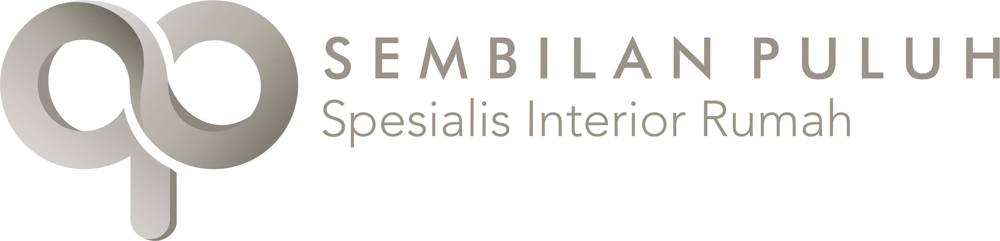

Website Sedang Dalam Pengembangan
Kami sedang menyempurnakan pengalaman menjelajahi Portofolio Desain, Custom Interior, dan layanan konsultasi kami. Situs akan segera kembali dapat diakses.
Pembaruan Sistem
50%

Website Sedang Dalam Pengembangan
Kami sedang menyempurnakan pengalaman menjelajahi Portofolio Desain, Custom Interior, dan layanan konsultasi kami. Situs akan segera kembali dapat diakses.